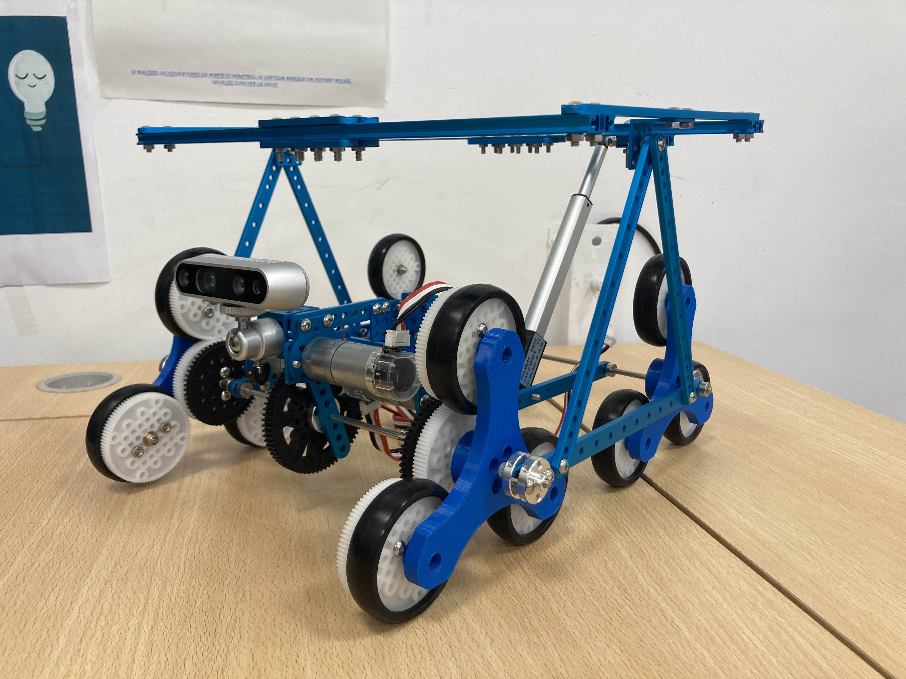
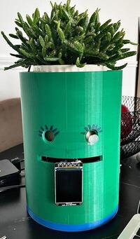

Lena Bessa
Technologies du handicap · IHM · Accessibilité
Étudiante en Master MIASHS spécialisée en technologies du handicap, je conçois des solutions numériques accessibles intégrant interaction humain-machine, cognition et inclusion afin de renforcer l’autonomie des utilisateurs.
Parcours & Projets
CarryBot – Robot compagnon mobile
Conception et prototypage d’un robot mobile à trois roues destiné à assister les personnes dans leurs déplacements en intérieur.
Développement d’un système embarqué permettant le transport autonome de charges légères, avec une réflexion centrée sur l’accessibilité et l’autonomie des utilisateurs.
- • Modélisation 3D et prototypage
- • Interaction homme-machine
- • Assistance à la mobilité

Green-Mate – Plante connectée (IoT)
Conception d’un système électronique intelligent permettant de surveiller en temps réel les paramètres environnementaux d’une plante.
Acquisition et traitement de données (humidité, température, lumière), avec restitution d’informations à l’utilisateur pour une interaction simplifiée.
- • Capteurs environnementaux
- • Acquisition de données
- • Système interactif

Clavier directionnel CAA (Java Swing)
Développement d’une interface de communication alternative et améliorée destinée aux personnes en situation de handicap moteur sévère.
Implémentation d’un système de balayage automatique avec navigation directionnelle et intégration d’une synthèse vocale pour faciliter l’expression.
- • Java Swing (IHM)
- • Synthèse vocale (MaryTTS)
- • Interaction adaptative
Application de guidage PMR (Web / Symfony)
Conception et développement d’une application web permettant la navigation accessible sur un campus universitaire.
Intégration d’un système de cartographie, gestion des obstacles (ascenseurs, accès bloqués) et personnalisation des trajets selon les besoins des utilisateurs.
- • Symfony (backend)
- • Gestion des données géographiques
- • Accessibilité numérique
Jeu Tetris (Android)
Développement d’un jeu mobile en Java avec Android Studio, intégrant gestion des collisions, score et animations en temps réel.
- • Java
- • Android Studio
- • Gaming
Chat temps réel (WebSocket)
Mise en place d’une application de messagerie instantanée utilisant WebSocket pour la communication en temps réel entre utilisateurs.
- • JavaScript (Node.js)
- • socket.io
- • ws
Application de gestion de tâches
Conception d’une application mobile permettant la planification et le suivi de tâches avec gestion des données utilisateur.
- • Python
- • Education
Parcours ACADÉMIQUE
Master MIASHS – Technologie et Handicap
Formation spécialisée en conception de solutions numériques accessibles, intégrant interaction humain-machine, cognition et technologies d’assistance.
- • Accessibilité numérique (RGAA)
- • Interaction Homme-Machine (IHM)
- • Technologies de compensation (CAA, capteurs)
Licence Informatique
Acquisition des fondamentaux en développement logiciel, structures de données, et conception d’applications.
- • Programmation (Java, Python)
- • Algorithmique
- • Bases de données
- • Statistique & probabilités
Baccalauréat Mathématiques
Formation scientifique avec bases en mathématiques et raisonnement logique, ayant orienté vers les études en informatique.
2020Contact
Email : lenabessa02@gmail.com
GitHub : github.com/lenabsa